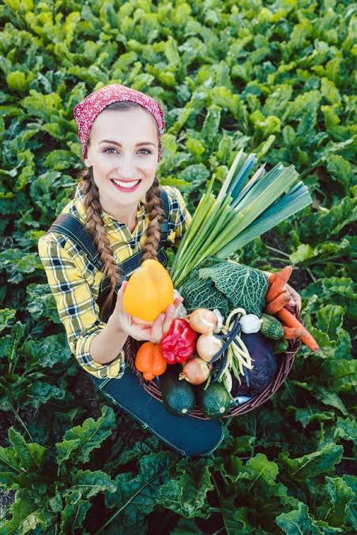

Good food. A greener future.
We believe that making thoughtful food choices can contribute to a healthier community and a more sustainable future. At Verdant, we're working towards making everyday shopping more responsible.
Explore Our CommitmentSmall choices can make a meaningful difference.
Sustainability is about thinking beyond the products we buy. It means considering how food is sourced, how much goes to waste, and how our everyday decisions affect the environment and the communities around us.
Our goal is to encourage more thoughtful shopping habits while building a grocery experience that values quality, responsibility and care.

Our sustainability priorities
These are the areas guiding our approach to more responsible grocery shopping.
Supporting Local Farms
We value local farmers and producers. Supporting them can strengthen communities and encourage more responsible food systems.
Reducing Food Waste
We encourage thoughtful meal planning, proper food storage and buying quantities that match household needs.
Mindful Packaging
We recognise the importance of reducing unnecessary packaging and exploring more environmentally responsible packaging choices.
Conscious Shopping
We want to make it easier for customers to think about where their food comes from and make informed choices.
Let's make every grocery purchase count.
You can help reduce food waste through simple everyday habits:
- Plan your meals before shopping.
- Make a shopping list and avoid unnecessary purchases.
- Store fresh produce properly.
- Use older ingredients before opening new ones.
- Share surplus food when it is safe and practical.
A better future starts with everyday choices.
Thank you for being part of a community that values good food, thoughtful choices and a greener future.
Back to Home